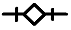
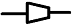
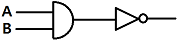
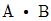
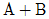
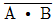
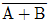

공조냉동기계기능사 (2009-07-12 기출문제)
1과목: 공조냉동안전관리
1. 안전한 작업을 하기 위한 작업복에 관한 설명으로 옳지 않은 것은?
- 직종에 따라 여러 색채로 나누는 것도 효과적이다.
- 작업 기간에는 세탁을 하지 않는다.
- 주머니는 가급적 수가 적어야 한다.
- 화학약품에 대한 내성이 강해야 한다.
(정답률: 84%)

2. 가스용접 작업시의 주의사항이 아닌 것은?
- 용기밸브는 서서히 열고 닫는다.
- 용접 전에 소화기 및 방화사를 준비한다.
- 용접 전에 전격방지기 설치 유무를 확인한다.
- 역화방지를 위하여 안전기를 사용한다.
(정답률: 69%)
3. 압축기 운전 중 이상 음이 발생하는 원인이 아닌 것은?
- 기초볼트의 이완
- 토출밸브, 흡입밸브의 파손
- 피스톤 하부에 다량의 오일이 고임
- 크랭크샤프트 및 피스톤 핀 등의 마모
(정답률: 77%)
4. 컨베이어 등에 근로자의 신체의 일부가 말려드는 등 근로자에게 위험을 미칠 우려가 있을 때는 무엇을 설치하여야 하는가?
- 권과방지장치
- 비상정지장치
- 해지장치
- 이탈 및 역주행 방지장치
(정답률: 82%)
5. 일정기간마다 정기적으로 점검하는 것을 말하며, 일반적으로 매주 또는 매월 1회씩 담당 분야별로 당해 분야의 작업책임자가 점검하는 것은?
- 계획점검
- 수시점검
- 일시점검
- 특별점검
(정답률: 66%)
6. 보호장구는 필요할 때 언제라도 착용할 수 있도록 청결하고 성능이 유지된 상태에서 보관되어야 한다. 보관방법으로 틀린 것은?
- 광선을 피하고 통풍이 잘되는 장소에 보관할 것
- 부식성, 유해성, 인화성 액체 등과 혼합하여 보관하지 말 것
- 모래, 진흙 등이 묻은 경우는 깨끗이 씻고 햇빛에서 말릴 것
- 발열성 물질을 보관하는 주변에 가까이 두지 말 것
(정답률: 86%)
7. 수공구 중 작업시 안전작업수칙으로 옳지 않은 것은?
- 정의 머리가 둥글게 된 것은 사용하지 말 것
- 처음에는 가볍게 때리고 점차 타격을 가할 것
- 철재를 절단할 때에는 철편이 날아 튀는 것에 주의할 것
- 표면이 단단한 열처리 부분은 정으로 가공할 것
(정답률: 79%)
8. 냉동설비의 설치공사 완료 후 시운전 또는 기밀시험을 실시할 때 사용할 수 없는 것은?
- 헬륨
- 산소
- 질소
- 탄산가스
(정답률: 79%)
9. 다음 중 감전사고 예방을 위한 방법이 아닌 것은?
- 전기 설비의 점검을 철저히 한다.
- 전기기기에 위험 표시를 해 둔다.
- 설비의 필요 부분에는 보호 접지를 한다.
- 전기기계 기구의 조작은 필요시 아무나 할 수 있다.
(정답률: 91%)
10. 기계설비를 안전하게 하고자 한다. 물체가 떨어지거나 날아올 위험 또는 근로자가 감전되거나, 추락할 위험이 있는 작업을 하고자 할 때 필요한 보호구인 것은?
- 안전모
- 안전벨트
- 방열복
- 보안면
(정답률: 83%)
11. 보일러에서 점화 시 점화 불량의 원인이 아닌 것은?
- 공기의 조성비가 나쁠 때
- 점화용 트랜스의 전기 스파크 불량일 때
- 주전원 전압이 맞지 않을 때
- 기름의 온도가 적당할 때
(정답률: 84%)
12. 연료계통에 화재 발생 시 가장 적합한 소화 작업에 해당되는 것은?
- 찬물을 붓는다.
- 산소를 공급해 준다.
- 점화원을 차단한다.
- 가연성 물질을 차단한다.
(정답률: 63%)
13. 작업장에서 가장 높은 비율을 차지하는 사고원인이라 할 수 있는 것은?
- 작업방법
- 시설장비의 결함
- 작업환경
- 근로자의 불안전한 행동
(정답률: 82%)
14. 줄 작업 시 안전사항으로 옳지 않은 것은?
- 줄의 균열 유무를 확인한다.
- 줄은 손잡이가 정상인 것만을 사용한다.
- 땜질한 줄은 사용하지 않는다.
- 줄 작업에서 생긴 가루는 입으로 불어 제거한다.
(정답률: 84%)
15. 전기 기구에 사용하는 퓨즈(Fuse)의 재료로 부적당한 것은?
- 납
- 주석
- 아연
- 구리
(정답률: 75%)
2과목: 냉동기계
16. 터보식 냉동기와 왕복동식 냉동기를 비교 했을 때 터보식 냉동기의 특징으로 맞는 것은?
- 회전수가 매우 빠르므로 동작밸런스나 진동이 크다.
- 보수가 어렵고 수명이 짧다.
- 소용량의 냉동기에는 한계가 있고 생산가가 비싸다.
- 저온장치에서도 압축단수가 적으므로 사용도가 넓다.
(정답률: 45%)
17. 팽창밸브에 관한 설명 중 틀린 것은?
- 팽창밸브의 조절이 양호하면 증발기를 나올 때 가스 상태를 건조포화 증기로 할 수 있다.
- 팽창밸브에 될 수 있는 대로 낮은 온도의 냉매액을 보내도록 하면 냉동능력이 증대한다.
- 팽창밸브를 과도하게 조이면 증발기 내부가 저압, 저온이 되어 증발기 출구의 가스가 과열되므로 압축기는 과열압축이 된다.
- 팽창밸브를 조절할 때는 서서히 개폐하는 것보다 급히 개폐하는 것이 빨리 안정된 운전 상태로 들어 갈 수 있으므로 좋다.
(정답률: 77%)
18. 스크류 압축기의 장점이 아닌 것은?
- 흡입, 토출밸브가 없으므로 마모 부분이 없어 고장이 적다.
- 냉매의 압력 손실이 크다.
- 무단계 용량제어가 가능하며, 연속적으로 행할 수 있다.
- 체적 효율이 크다.
(정답률: 63%)
19. 브라인에 대한 설명 중 옳은 것은?
- 브라인은 냉동능력을 낼 때 잠열 형태로 열을 운반한다.
- 에틸렌글리콜, 프로필렌글리콜, 염화칼슘 용액은 유기질 브라인이다.
- 염화칼슘 브라인은 그 중에 용해되고 있는 산소량이 많을수록 부식성이 적다.
- 프로필렌 글리콜은 부식성, 독성이 없어 냉동식품의 동결용으로 사용된다.
(정답률: 62%)
20. 출력이 5kW인 직류 전동기 효율이 80%이다. 이 직류 전동기의 손실은 몇 W인가?
- 1250
- 1350
- 1450
- 1550
(정답률: 43%)
21. 팽창밸브 직후의 냉매 건조도를 0.23, 증발 잠열을 52kcal/kg이라 할 때, 이 냉매의 냉동 효과는 약 몇 kcal/kg인가?
- 226
- 40
- 38
- 12
(정답률: 42%)
22. 가스엔진 구동형 열펌프(GHP)의 장점이 아닌 것은?
- 폐열의 유효이용으로 외기온도 저하에 따른 난방능력의 저하를 보충한다.
- 소음 및 진동이 없다.
- 제상운전이 필요 없다.
- 난방 시 기동 특성이 빨라 쾌적난방이 가능하다.
(정답률: 60%)
23. 다음 K.S 배관도시 기호 중 신축 관이음을 표시하는 기호는?


(정답률: 69%)
24. 용적형 압축기에 대한 설명으로 맞지 않는 것은?
- 압축실내의 체적을 감소시켜 냉매의 압력을 증가 시킨다.
- 압축기의 성능은 냉동능력, 소비동력, 소음, 진동값 및 수명 등 종합적인 평가가 요구된다.
- 압축기의 성능을 측정하는데 유용한 두 가지 방법은 성능계수와 단위 냉동능력당 소비동력을 측정하는 것이다.
- 개방형 압축기의 성능계수는 전동기와 압축기의 운전효율을 포함하는 반면, 밀폐형 압축기의 성능계수에는 전동기효율이 포함되지 않는다.
(정답률: 72%)
25. 정전 시 조치 사항 내용으로 틀린 것은?
- 냉각수 공급을 중단한다.
- 수액기 출구 밸브를 닫는다.
- 흡입밸브를 닫고 모터가 정지한 후 토출밸브를 닫는다.
- 냉동기의 주 전원 스위치는 계속 통전 시킨다.
(정답률: 81%)
26. CA 냉장고란 무엇을 말하는가?
- 제빙용 냉동고를 CA 냉장고라 한다.
- 공조용 냉장고를 CA 냉장고라 한다.
- 해산물 냉동고를 CA 냉장고라 한다.
- 청과물 냉동고를 CA 냉장고라 한다.
(정답률: 78%)
27. 냉동장치 운전에 관한 설명으로 옳은 것은?
- 흡입압력이 저하되면 토출가스 온도가 저하된다.
- 냉각수온이 높으면 응축압력이 저하된다.
- 냉매가 부족하면 증발압력이 상승한다.
- 응축압력이 상승되면 소요동력이 상승한다.
(정답률: 50%)
28. 전류계의 측정범위를 넓히는데 사용되는 것은?
- 배율기
- 분류기
- 역률기
- 용량분압기
(정답률: 63%)
29. 냉동기유의 구비조건 중 옳지 않은 것은?
- 응고점과 유동점이 높을 것
- 인화점이 높을 것
- 점도가 적당할 것
- 전기절연 내력이 클 것
(정답률: 64%)
30. 다음 중 실제 증기압축 냉동사이클의 설명으로 맞지 않는 것은?
- 실제 냉동사이클과 이론적인 냉동사이클과의 차이는 주로 압축기에서 발생한다.
- 압축기를 제외한 시스템의 모든 부분에서 냉매배관의 마찰저항 때문에 냉매유동의 압력강하가 존재한다.
- 실제 냉동사이클의 압축과정에서 소요되는 일량은 표준 증기 압축사이클 보다 감소하게 된다.
- 사이클의 작동유체는 순수물질이 아니라 냉매와 오일의 혼합물로 구성되어 있다.
(정답률: 42%)
31. 수직형 셀 앤 튜브 응축기의 설명으로 틀린 것은?
- 설치면적이 적어도 되며, 옥외 설치가 가능하다.
- 유분리기와 응축기사이는 균압관을 설치하는 것이 좋다.
- 대형 NH3 냉동장치에 사용된다.
- 응축열량은 증발기에서 흡수한 열량과 압축기 열량의 합과 같다.
(정답률: 37%)
32. 다음 중 2단압축 2단팽창 냉동사이클에서 사용되는 중간 냉각기의 형식은?
- 플래시형
- 액냉각형
- 직접팽창식
- 저압수액기식
(정답률: 47%)
33. 흡수식 냉동장치에서 냉매인 물이 5℃ 전후의 온도로 증발하고 있다. 이때 증발기 내부의 압력은?
- 약 7㎜Hg(933Pa)·a 정도
- 약 32㎜Hg(4266Pa)·a 정도
- 약 75㎜Hg(9999Pa)·a 정도
- 약 108㎜Hg(14398Pa)·a 정도
(정답률: 48%)
34. 1 냉동톤(한국)에 대한 설명으로 옳은 것은?
- 0℃의 물 1000kg을 24시간 동안에 0℃의 얼음으로 만드는 냉동능력
- 25℃의 물 1000kg을 24시간 동안에 0℃의 얼음으로 만드는 냉동능력
- 0℃의 물 1000kg을 24시간 동안에 -10℃의 얼음으로 만드는 냉동능력
- 0℃의 물 1000kg을 1시간 동안에 0℃의 얼음으로 만드는 냉동능력
(정답률: 77%)
35. 루프형 신축이음의 곡률 반경은 관지름의 몇 배 이상이 좋은가?
- 1배
- 2배
- 3배
- 4배
(정답률: 52%)
36. 1PS는 1시간당 약 몇 kcal에 해당되는가?
- 860
- 550
- 632
- 427
(정답률: 58%)
37. 다음 중 보온재를 선정할 때의 유의사항이 아닌 것은?
- 열전도율
- 물리적·화학적 성질
- 전기전도율
- 사용온도 범위
(정답률: 69%)
38. 다음 중 단수 릴레이의 종류에속하지 않는 것은?
- 단압식 릴레이
- 차압식 릴레이
- 수류식 릴레이
- 비례식 릴레이
(정답률: 66%)
39. 증기를 교축시킬 때 변화가 없는 것은?
- 비체적
- 엔탈피
- 압력
- 엔트로피
(정답률: 57%)
40. 고온가스를 이용하는 제상 장치 중 고온가스를 증발기에 유입시키기 위한 적합한 인출 위치는?
- 액분리기와 압축기 사이
- 증발기와 압축기 사이
- 유분리기와 응축기 사이
- 수액기와 팽창밸브 사이
(정답률: 32%)
41. 1[psi]는 몇 [gf/cm2]인가?
- 64.5
- 70.3
- 82.5
- 98.1
(정답률: 46%)
42. 다음 논리기호의 논리식으로 적절한 것은?





(정답률: 56%)
43. 2원 냉동 사이클에 대한 설명으로 틀린 것은?
- -70℃ 이하의 저온을 얻기 위해 이용한다.
- 2종류의 냉매를 이용한다.
- 저온측 냉매는 수냉각으로 응축시켜야 한다.
- 저압측에 팽창탱크를 설치한다.
(정답률: 43%)
44. 저온을 얻기 위해 2단 압축을 했을 때의 장점은?
- 성적계수가 향상 된다.
- 설비비가 적게 된다.
- 체적효율이 저하 한다.
- 증발압력이 높아진다.
(정답률: 69%)
45. 스윙(swing)형 체크밸브에 관한 설명으로 틀린 것은?
- 호칭치수가 큰 관에 사용된다.
- 유체의 저항이 리프트(lift)형보다 적다.
- 수평배관에만 사용할 수 있다.
- 핀을 축으로 하여 회전시켜 개폐한다.
(정답률: 70%)
3과목: 공기조화
46. 습공기를 절대습도의 변화 없이 가열하거나 냉각하면 실내 현열비(SHF)의 변화는 어떻게 되는가?
- SHF=0 선상을 이동한다.
- SHF=0.5 선상을 이동한다.
- SHF=1 선상을 이동한다.
- SHF는 나타나지 않는다.
(정답률: 55%)
47. 가습효율이 100%에 가까우며, 무균이면서 응답성이 좋아 정밀한 습도제어가 가능한 가습기는?
- 물분무식 가습기
- 증발팬 가습기
- 증기 가습기
- 초소형 초음파 가습기
(정답률: 61%)
48. 공기조화기에 속하지 않는 것은?
- 공기가열기
- 공기냉각기
- 덕트
- 공기여과기(에어필터)
(정답률: 66%)
49. 밀폐식 수열원 히트 펌프 유닛방식의 설명으로 옳지 않는 것은?
- 유닛마다 제어기구가 있어 개별운전이 가능하다.
- 냉·난방부하를 동시에 발생하는 건물에서 열회수가 용이하다.
- 외기냉방이 가능하다.
- 사무소, 백화점 등에 적합하다.
(정답률: 64%)
50. 강제 순환식 난방에서 실내손실 열량이 3000kcal/h이고, 방열기 입구수온이 50℃, 출구온도가 42℃일 때 온수 순환량은 몇 kg/h인가?
- 254
- 313
- 342
- 375
(정답률: 42%)
51. 다음 중 풍량 조절용 댐퍼가 아닌 것은?
- 버터 플라이 댐퍼
- 베인 댐퍼
- 루버 댐퍼
- 릴리프 댐퍼
(정답률: 50%)
52. 드럼이 없이 수관만으로 되어 있으며, 가동시간이 짧으며, 과열되어 파손되어도 비교적 안전한 보일러는?
- 주철제 보일러
- 관류 보일러
- 원통형 보일러
- 노통연관식 보일러
(정답률: 73%)
53. 공연장의 건물에서 관람객이 500명이고, 1인당 CO2 발생량이 0.⑤m3/h일 때 환기량(m3/h)은? (단, 실내 허용 CO2 농도는 600ppm, 외기 CO2 농도는 1000ppm 이다.)
- 30,000
- 35,000
- 40,000
- 50,000
(정답률: 34%)
54. 실내에서 폐기되는 공기 중의 열을 이용하여 외기 공기를 예열하는 열 회수방식은?
- 열펌프 방식
- 열파이프 방식
- 런 어라운드 방식
- 팬코일 방식
(정답률: 57%)
55. 공기조화기에서 사용하는 에어필터 중에서 병원의 수술실이나 클린룸 시설에 가장 적합한 필터는?
- 룰 필터
- 프리 필터
- HEPA 필터
- 활성탄 필터
(정답률: 72%)
56. 겨울철 창문의 창면을 따라서 존재하는 냉기가 토출기류에 의하여 밀려 내려와서 바닥을 따라 거주구역으로 흘러 들어와 인체의 과도한 차가움을 느끼는 현상을 무엇이라 하는가?
- 쇼크 현상
- 콜드 드래프트
- 도달거리
- 확산 반경
(정답률: 82%)
57. 온풍난방기에서 사용되는 배기통 공사시의 주의 사항으로 틀린 것은?
- 배기통이 가연성 벽이나 천장을 통과하는 부분에는 슬리브를 사용한다.
- 배기통의 직경은 온풍난방기의 배기통 접속구 치수와 같은 규격을 사용한다.
- 배기통의 가로길이는 되도록 길게 하고, 구부리는 곳은 4개소 이내로 하여 통풍저항을 줄인다.
- 배기통 선단은 옥외로 내고, 우수침입 및 역풍을 방지하는 배기통 톱을 고정시키고 모든 방향으로 통풍이 되는 위치에서 풍압대가 아닌 것으로 한다.
(정답률: 52%)
58. 최근 공기조화 방식을 설계하는 데 있어서 중점적으로 고려되고 있는 사항과 거리가 먼 것은?
- 건물의 모양
- 에너지 절약 대책
- 잔업시간에 대한 경제적인 운전대책
- 설비의 수명과 지출비용의 경제성 비교
(정답률: 61%)
59. 다음 중 보일러 스케일 방지책으로 적합하지 않는 것은?
- 청정제를 사용한다.
- 급수 중의 불순물을 제거한다.
- 보일러 판을 미끄럽게 한다.
- 수질분석을 통한 급수의 한계값을 유지한다.
(정답률: 74%)
60. 다음 중 조명부하를 쉽게 처리할 수 있는 취출구는?
- 아네모스텟
- 축류형 취출구
- 웨이형 취출구
- 라이트 트로퍼
(정답률: 55%)